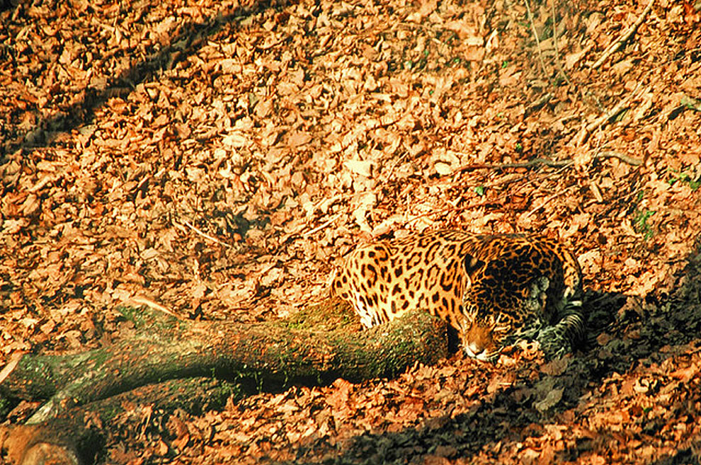

Facts about Jaguars
Jaguars are the third largest big cat in the world, with only tigers and lions being larger. They stand up to 68 - 75 cm tall, and normally weigh around 56 - 97 kg. Female jaguars tend to be around 10-20% smaller than males. They also have the shortest tails of any big cat, theirs usually being around 45 - 75cm.
